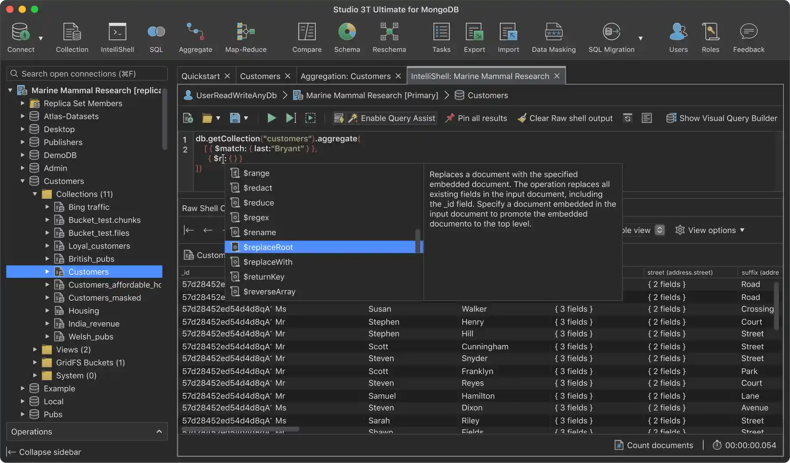

请访问原文链接：Studio 3T 2026.15 (macOS, Linux, Windows) - MongoDB 的终极 GUI、IDE 和 客户端 查看最新版。原创作品，严禁商业及个人盈利性网站转载。
作者主页：sysin.org
Studio 3T，MongoDB 的终极 (卓越、非凡) GUI、IDE 和 客户端
适用于 MongoDB 的所有 IDE、客户端和 GUI 工具——在 Atlas 上或任何地方。

MongoDB 的强大工具。
超过 100,000 名开发人员和数据库管理员使用 Studio 3T 作为他们首选的 MongoDB GUI
MongoDB 客户端、GUI 与 IDE
那么 Studio 3T 到底是什么？ 在这里，我们解释了它戴的许多帽子中的三个。
Studio 3T 作为 MongoDB 客户端
客户端是允许您连接到服务器的软件程序或应用程序。尽情使用 Studio 3T 的连接管理器，根据需要连接到尽可能多的 MongoDB 服务器。
Studio 3T 作为 MongoDB GUI
图形用户界面 (GUI) 完全按照它说的去做。它提供了一个带有图形菜单、图标、对话框、向导和其他可视元素的用户界面。使用 MongoDB GUI 的替代方法是使用 mongo shell，尽管 Studio 3T 仍然有 IntelliShell——一个易于导航的内置版本——当你需要的时候。
Studio 3T 作为 MongoDB IDE
集成开发环境 (IDE) 将应用程序和数据库开发的许多方面整合到一个功能齐全的 “工作室” 环境中 (sysin)。Studio 3T 正是通过提供一个 GUI 来做到这一点，该 GUI 的编辑器具有自动完成和语法突出显示、内置 JSON 验证、七种语言的自动查询代码生成以及许多其他功能，可帮助您更快地工作并节省时间。
Studio 3T Community Edition
您的免费 MongoDB 数据库管理工具
Studio 3T 社区版是一款免费的非商业版数据库管理工具，旨在帮助您开启 MongoDB 之旅。无论您是学生、个人开发者，还是负责个人项目的 DBA，直观的社区版都能让您更轻松地高效使用 MongoDB。

Robomongo 现已升级为 Studio 3T 社区版!
Robo 3T（以前称为 Robomongo）于 2017 年被 MongoDB 客户端 Studio 3T 的创建者 3T Software Labs 收购。
Studio 3T 社区版是一个现代替代品，它保留并扩展了 Robo3T 的许多功能，同时仍然可以免费使用。
常问问题：
✅ 什么是 Studio 3T 社区版？
Studio 3T 社区版是一款免费的 MongoDB 数据库管理工具，提供帮助您高效使用 MongoDB 的各项基本功能。它专为非商业用途而设计，尤其适合个人开发者、学生和小型组织。
✅ Studio 3T 社区版与旧的免费版有何不同？
Studio 3T 已发展成为一款专注于商业和企业用途的高级工具 (sysin)。为了继续为个人用户提供免费版本，Studio 3T Team 推出了 Studio 3T 社区版。
✅ 如果我的需求发生变化/我需要更多功能怎么办？
当您的团队成长或业务扩大时，升级到付费的 Studio 3T 许可证将使您能够访问高级功能，以帮助您掌握 MongoDB，其中包括：
- SQL 查询：提高您的技能并使用熟悉的 SQL 语法查询 MongoDB 数据库。
- 查询生成器：通过拖放查询构建加速查询编写。
- AI 助手：通过无代码体验探索 MongoDB 数据，减少学习曲线。
- 聚合编辑器：使用可视化工具调试聚合管道 (sysin)，显示每个阶段的数据输入和输出。
- 导入/导出向导：使用其他格式（如 CSV 或 JSON）轻松导入或导出数据，甚至可以导出到 Excel 来探索 MongoDB 数据。
- 数据比较：比较数据以查找 MongoDB 环境中缺失或不一致的字段和文档。
- 团队共享：共享 MongoDB 查询并与更有经验的团队成员合作进行复杂的查询开发。
- 更多连接：当三个连接不够时，请切换到付费以消除限制。
- 专业支持：受益于 Studio 3T 支持团队的专业知识。
Studio 3T Team 目前提供两个商业版本：Studio 3T Professional 和 Ultimate，适用于团队和集成。
✅ 我可以在我的公司或客户工作中使用 Studio 3T 社区版吗？
不可以。根据新版 EULA 的定义，Studio 3T CE 仅供非商业个人使用。Studio 3T Team 建议您试用 Studio 3T Professional。它包含您常用的所有生产力工具，甚至更多，专为商业用途而设计。
✅ Studio 3T 还有免费试用吗？
是的！您可以随时开始免费试用。
新增功能
Studio 3T 2026.15.0（2026 年 11 月 09 日）
- 改进：团队共享（Team Sharing） - 提高团队共享文件夹的资源数量限制。
- 修复：比较/同步（Compare/Sync） - 修复了在比较/同步功能中，源面板（Source Panel）有时显示为空的问题。
- 修复：安全漏洞（Vulnerabilities） - 更新第三方依赖组件，以修复 CVE-2026-47890 和 CVE-2026-47892 安全漏洞。
- 修复：JSON 视图（JSON View） - 修复了从 JSON 视图编辑文档时，文档编辑器（Document Editor）可能选中错误值的问题。
- 修复：安全漏洞（Vulnerabilities） - 更新第三方依赖组件，以修复 CVE-2026-89407、CVE-2026-89425、CVE-2026-68497、CVE-2026-91776 和 CVE-2026-91777 安全漏洞。
- 修复：导出（Export） - 修复了 Studio 3T 在无法加载已保存的导出目标时可能发生崩溃的问题，该问题会导致计划任务无法运行。
- 修复：身份验证（Authentication） - 修复了使用 AWS IAM 身份验证方式连接 Amazon DocumentDB 时出现的问题。
Studio 3T 2026.14.0（2026 年 9 月 28 日）
🐛 问题修复（Bug Fixes）
漏洞 - 更新第三方依赖项，以修复 CVE-2026-13506 和 CVE-2026-8763。
连接 - 修复通过 VPN 访问服务器时，DNS 种子列表（mongodb+srv）连接失败的问题。
IntelliShell - 修复集合选项卡中自动建议无法正常显示的问题。
连接 - 修复导出后连接可能无法正确关闭的问题。
下载地址
Studio 3T 2026.1.0 | 2026-01-19
Studio 3T 2026.2.0 | 2026-02-02
Studio 3T 2026.3.0 | 2026-02-10
Studio 3T 2026.4.0 | 2026-02-25
Studio 3T 2026.5.0 | 2026-03-10
Studio 3T 2026.6.0 | 2026-03-25
Studio 3T 2026.7.0 | 2026-04-09
Studio 3T 2026.8.0 | 2026-04-20
Studio 3T 2026.9.0 | 2026-05-06
Studio 3T 2026.10.0 | 2026-05-21
Studio 3T 2026.11.0 | 2026-06-17
Studio 3T 2026.12.0 | 2026-07-17
Studio 3T 2026.13.0 | 2026-09-01
Studio 3T 2026.14.0 | 2026-09-28
Studio 3T 2026.15.0 | 2026-11-09
百度网盘链接：https://pan.baidu.com/s/15QepxFJU2gO2LGIlm3p-Kg?pwd=hkta
Studio 3T for macOS x64：
Studio-3T-<Version>-x64.dmgStudio 3T for macOS ARM64 (Apple silicon)：
Studio-3T-<Version>-arm64.dmgStudio 3T for Linux x64：
studio-3T-<Version>-linux-x64.tar.gzStudio 3T for Windows x64：
Studio-3T-<Version>-x64.exe

文章用于推荐和分享优秀的软件产品及其相关技术，所有软件提供免费版或试用版。内容若侵犯了您的版权，请联系作者删除。如果您喜欢这篇文章，或者觉得它对您有所帮助，亦或发现有不当之处；欢迎发表评论，也欢迎分享这个网站，或者赞赏一下，谢谢！提示：捐赠或赞赏属于自愿赠予行为，提交后即表示您对作者的支持与认可。为避免误操作，请在确认前仔细检查金额，支付完成后将无法撤销或退还。
 支付宝赞赏
支付宝赞赏  微信赞赏
微信赞赏赞赏一下
敬请注册！点击 “登录” - “用户注册”（已知不支持 21.cn/189.cn 邮箱）。 请勿使用联合登录（已关闭）。